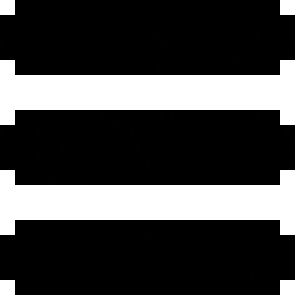
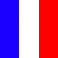
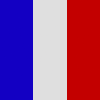
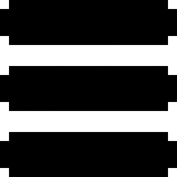
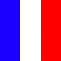
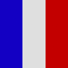
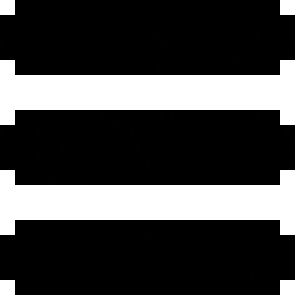
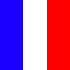
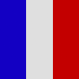

Portfolio de Anthony Verdon
Portfolio of Anthony Verdon
 





Portfolio de Anthony Verdon
Portfolio of Anthony Verdon



Bonjour et bienvenue sur mon Portfolio ! Je m'appelle Anthony Verdon et vous allez pouvoir en apprendre plus sur moi et sur mes différents projets de développement !
Hello and welcome on my Portfolio ! My name is Anthony Verdon and you will be able to learn more about me and my projects !
Je m’appelle Anthony Verdon, j’ai 17 ans et je suis actuellement en terminal générale, avec les spécialités NSI et maths ainsi que les options PAA et maths expert, au lycée Notre-Dame à Fontenay-le-Comte, en Vendée.
J’aimerai travailler dans l’informatique, dans la branche développement. Je suis encore jeune donc j’expérimente le plus de choses possibles, et vous pouvez voir dans la partie « projets » ce à quoi je me suis adonné. Mon but est de continuer d’essayer pour comprendre le plus de choses possibles en informatique, car je pense qu’une personne travaillant dans ce domaine se doit d’être multi-fonctions.
Bien sûr, j’aime programmer, sinon je n’aurais pas choisi cette voie. Ensuite, j’aime beaucoup la musique, la lecture ou encore les jeux-vidéos, comme beaucoup de personnes de mon âge. Ces passe-temps me permettent de me relaxer tout en agrandissant ma culture personnelle, ainsi que mon anglais ou globalement ma syntaxe pour la musique et la lecture, et ma logique pour les jeux-vidéos.Enfin, quelque chose de plus inhabituel à mon âge je pense, et surtout au vu de mon projet d’étude, c’est que j’aime jardiner. C’est aussi une façon de me relaxer, et ça me force à être régulier et persévérant dans mon travail pour obtenir des résultats.
My name is Anthony Verdon, I'm 17 years old and I'm actually in last year of high school with the specialities Computers Sciences and math, as well as math expert and PAA ( to prepare TOEIC ), in the high school Notre-Dame in Fontenay-le-Comte, in Vendée
I would like to work in computer science, in development branch. I'm still young so I experiment as many things as possible, and you can see in the section " projects " what I already tried. My goal is to continue to learn as many things as possible in computer sciences, because I think a person who work in this domain should be multi-functions
Of course, I like to develop, or I wouldn't have choose this path. Then, I like music, reading and video-games like many person. This passions help me to relax and to enlarge my culture, my english or globally my syntax. It also develop my logic with video games. Finally, something unusual I think is I like gardening. It's another way to relax, and it force me to work regularly and to be perservering if I want results
J’ai réalisé ce projet en 1ère pour l’école, je devais être capable de convertir un nombre entre les bases 2, 10 et 16. J’ai donc appliqué la technique de conversion d’un nombre de n’importe quelle base vers la base 10, puis j’ai fait la technique de conversion vers la base 2 et 16. Ainsi, je pouvais aussi convertir vers toutes les autres bases aussi très facilement. C’était mon premier gros projet, et comme je débutais, j’ai beaucoup appris avec et j’en étais très fier.
langage utilisé : Python
lien github
J’ai réalisé ce projet en terminal pour l’école. Je devais recréer le jeu de la vie de John Horton Conway ( si vous voulez en apprendre plus : https://fr.wikipedia.org/wiki/Jeu_de_la_vie ). Le projet était très intéressant mais avec ma petite expérience quand je l’ai réalisé, je n’ai pas appris grand-chose de nouveau et je l’ai réalisé assez vite. C’est pour cela que je me suis lancé pour apprendre le Tkinter, un module python permettant l’affichage graphique. C’est surtout sur cette partie que je me suis amusé, en réalisant toutes les idées qui me passait par la tête ( un bouton pause dans la modification, un menu où l’on peut choisir quelle forme initiale choisir ainsi que le nombre de tour et la vitesse de l’animation, et un système d’erreur pour éviter que le programme ne fonctionne pas ).
langage utilisé : Python, avec le module Tkinter
lien github
Mon 3ème gros projet a été ce portfolio. C’est mon premier site internet, et j’ai essayé de le rendre le plus ergonomique et beau dans l’idée qu’un recruteur puisse le voir un jour. Il m’a permis de mettre en pratique mes connaissances en HTML, CSS et un peu de JavaScript, et de découvrir de nouvelles choses. C’est aussi un projet dont je suis fier, car je l’ai réalisé de A à Z, même les images. Il sera mis à jour à chaque nouveau projet.
langage utilisé : HTML, CSS, JavaScript
lien github
J'ai beaucoup aimé faire ce projet, car il y a toute une histoire autour. Déjà, ce projet était dans le cadre scolaire, et nous étions sensé faire une machine de Turing ( n'importe laquelle ), mais " comme des flemmards ", avec mon partenaire nous avons décidé " si il existe un moyen de toutes les regrouper, autant le faire non ? On gagnera du temps ". Et nous avons réussi, donc comme d'habitude, la fierté du projet fini. Ensuite, il a l'histoire historique. Alan Turing était quand même un grand homme, et recréer un de ses projets, c'est quelque chose. Enfin, en tant qu'aspirant informaticien, réussir à faire un programme pouvant calculer tout ce qui est calculable, c'est aussi une immense fierté.
langage utilisé : Python, avec le module Tkinter
lien github
Ce projet quand a lui représente aussi quelque chose pour moi. Tout d'abord car c'est mon premier projet totalement hors du cadre scolaire, et aussi car il réutilise beaucoup de notions que j'ai vu, ainsi que de programmes que j'ai créé. Par exemple, il utilise l'affichage du Jeu de la Vie, ainsi que mon programme de conversion des nombres. Aussi, c'était un projet assez complexe car " très lourd ". Il y avait beaucoup de choses à faire pour le rendre vraiment bien. Mais malgré cela, j'ai réussi et j'en suis fier. Je dois tout de même remercier Dimension, un youtuber ( sa chaîne ), car je tire l'idée et la façon de faire le projet d'une de ses vidéos, mais bien entendu j'ai réalisé moi même mon code et y est ajouté ma touche personnel.
langage utilisé : Python, avec le module Tkinter
lien github
I realised this project in 2nd year of high school for my school. I should be able to convert a number from base 2 to base 10 or base 16. I decided to start by convert the number in base 10, and after to convert in the base we wanted initially. It was my first big project and because I just started to develop, I learned many things and I was proud of myself.
language used : Python
link github
I realised this project in last year of high school for school. I should recreate the game of life of John Horton Conway ( if you want to learn more about it : https://fr.wikipedia.org/wiki/Jeu_de_la_vie ). This project was interesting but with my little amount of experience, I didn't learn new things and I did it fast. That's why I started to learn Tkinter, a python module to create a graphic display. It's on this part where I took fun, because every time I had a new idea ( a break button, a menu, a way to choose how many round you want to play and the speed of the animation, etc ... ), I could do it.
language used : Python, with the module Tkinter
link github
My third big project has been this website. It's the first one I created, and I tried to make it beautiful and ergonomic. I could use what I learned in HTML, CSS and Javascript and I also discover new things. It also a project which I'm proud because it's the first one out of school. I will update it for each new project.
language used : HTML, CSS, JavaScript
link github
I really like to do this project for differents reasons. The first one is because of the story of Alan Turing and his device. It was a big person and I'm happy to recreate one of his project. The second reason is because this project is able to calculate everything that can be calculated. Finally, the third reason is because I created it with a friend for my school, but initially we had to program one device of Turing, not the universal version, and I'm proud because we managed to do what our teacher didn't think we were capable of.
language used : Python, with the module Tkinter
link github
This project was really great to do it. It's the one who let me think " I can be a developer ", because it was quite big, and because I used many notions I learned in school or program I already did, like the base converter of the graphic display. I took the idea to create and resolve the labyrinth from Dimension, a youtuber ( his channel ), but I wrote my code and I add my personal touch.
language used : Python, with the module Tkinter
link github